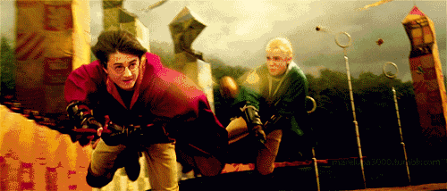
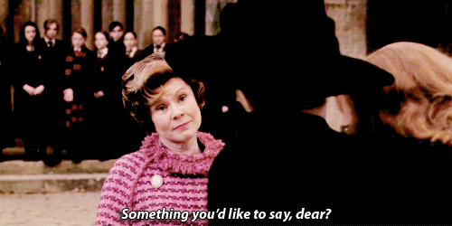
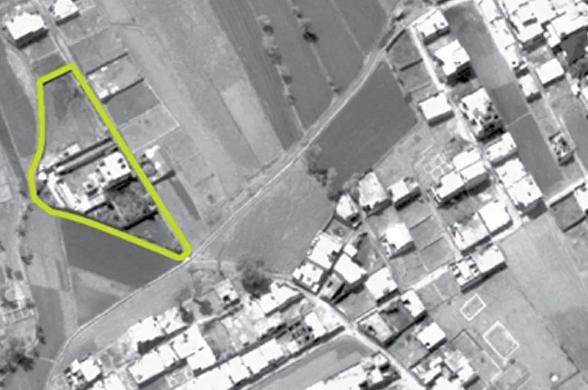
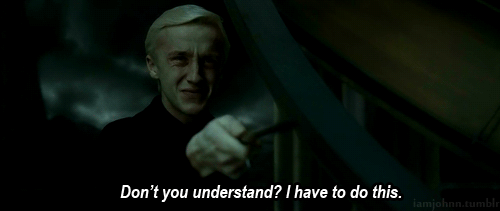
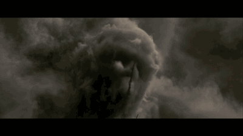
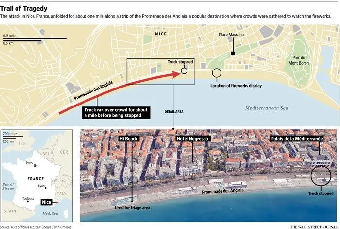

收录于合集
以下文章来源于秒懂国关 ，作者秒懂国关
秒懂国关 .
国际关系也可以如此接地气
趣味国关 · 国关人眼中的哈利波特 ****
本文约 6000字 ，预计阅读时长 6分钟
在系列的第一期《哈利•波特中的战争与同盟》中，我们从同盟关系的角度重读了哈利波特。今天我们将推出《哈利•波特与国际政治》系列的第二期《哈利•波特中的恐怖主义》～
本期编委
【作者】
陈育涵
（英国谢菲尔德大学政治与国际关系学院
硕士研究生）
【策划】
姚寰宇
（“秒懂国关”栏目策划人，山东大学东北亚学院
硕士研究生）
【排版】
谭誉豪
哈利波特魔法世界中，最令人恐惧的非“恐怖组织”食死徒莫属了。在第一次魔法大战中，邪恶势力的头目伏地魔坚决反对巫师与麻瓜通婚，认为这玷污了魔法血统。于是他们立誓杀掉魔法界的混血法师，甚至一度想要血洗麻瓜界，由此在英国大陆上制造恐慌——这一切，使食死徒成为大不列颠帝国公认的最可怕的恐怖组织。同时，魔法世界的合法政权——魔法部，也费尽心思全力应对这一恐怖组织、试图阻止其恐怖行径。
那么从恐怖主义研究的角度出发，如何理解魔法世界中的食死徒行为和合法政权的反恐行为呢？
图源[1]
国际社会一直对恐怖主义的定义持有争议，不仅是不同国家对恐怖主义的定义略有差异，而且即使是同一个政府组织里的部门也无法达成共识，或者是专家及其他在这个领域享负盛名的学者。目前，大部分国家采取的一百多种定义中，基本包含了以下主要特征： 以政治为目的或动机、诉诸暴力或将要诉诸暴力、对目标或受害人以外的人物或团体造成深远的心理影响、由具备可被识别的指挥系统及隐蔽细胞系统的组织指挥行动，成员穿着制服或佩戴可被识别的徽章、亚国家组织或非国家行为者。
在哈利波特故事的魔法世界中，伏地魔的行为就与恐怖主义有着强烈的相似之处。首先，伏地魔的政治动机包括：意图迫害混血巫师甚至整个麻瓜界，力求在巫师届获得权力，甚至想要实现纯血巫师对整个英国大陆的统治[1]。而且，其暴力行径多针对非战斗人员。一般来讲，战斗人员指直接参与有组织的武装斗争的人员。在哈利波特魔法世界中，傲罗是魔法部唯一受过黑魔法训练的武装力量，以及邓布利多针对食死徒秘密建立的组织凤凰社的成员们。食死徒的恐怖行径不仅针对巫师们，也针对手无寸铁的麻瓜们——比如《哈利波特与混血王子》中对麻瓜桥的破坏、对麻瓜的杀戮；《哈利波特与密室》中金妮• 韦斯莱被绑进密室、学校接二连三的石化事件等；《哈利波特与火焰杯》中，三强争霸赛高潮时发生的塞德里克事件，包括发生在魁地奇世界杯场地上的恐怖袭击——戴着面具的巫师穿过场地 “发出像枪声一样的声音”。除此之外，伏地魔的行为也可以归结为次国家或者秘密行动。他不服从任何外在权威，在第二次魔法大战中所有的行动都是秘密进行的。他的行为也有意在魔法界及麻瓜界制造恐慌，以阻止任何可能的抵抗。而且他也对食死徒、或者其追随者使用暴力，在组织中散布恐惧。这都符合恐怖主义的行为特征。
魁地奇比赛
图源[2]

魁地奇比赛
图源[3]
在现实世界中，袭击毫无防备的非军事目标、以非战斗人员为目标都是基地组织、伊斯兰国、爱尔兰共和军等恐怖组织惯用的手段。其中，基地组织在1998年美国驻东非国家肯亚大使馆遭受汽车炸弹袭击，造成200多人死亡；2001年9月11日的美国自杀式恐怖袭击事件，导致2996人死亡，6000人以上受伤；2005年7月7日英国伦敦的爆炸袭击案，造成52人死亡，伤者逾百……这些行动给全世界的平民造成了巨大的恐慌，对受害者造成了巨大的心理阴影。
1998年美国大使馆爆炸案
图源[4]
但同样地，“某人眼中的恐怖分子可能是另一个人眼中的自由战士”，类似的战术在美国革命战争前，却被美国人认为是抵抗英国统治的勇敢且富有创新性的战术。[2] 恐怖主义实际上是由是否认同实施这类战术的人的政治和道德取向来定义的，所以恐怖主义也在根本上定义了谁是敌人。[3]比如，当哈利波特和马尔福同时采用同样的魔法对彼此造成一定伤害时，我们仍旧更倾向于视哈利波特为正义的一方、马尔福为恶势力的一方。同时，恐怖主义也是由文化认同和政治霸权决定的。定义恐怖主义的前提是定义合法暴力，而现代国家是合法暴力的唯一仲裁者[3]，即国家对合法暴力说了算，所以任何不利于当局的非法暴力常常被视为恐怖主义。 因此，当伏地魔的行为对当局魔法部合法政权产生威胁时，其行为均被认定为潜在的非法暴力。
而当我们的定义前提是实施非法暴力的行为者可包括国家时，国家对自己的部分或全部人口采取的恐怖行为则更应引起重视——相比个人和大部分次国家叛乱组织，国家更具有强制力。1975-1979年间，波尔布特在掌握柬埔寨政权后，以社会改造为由进行红色高棉大屠杀，造成全国范围内150万到300万人非正常死亡；1915年，奥斯曼土耳其政府在两年内对其辖境内的亚美尼亚人也进行了种族屠杀，受害者数量达到150万之众。但由于对“恐怖主义”的定义不同，国际社会及执政当局未就类似政府行为达成定性共识。魔法世界中，在哈利波特五年级的时候，魔法部部长福吉认为霍格沃滋学校校长邓布利多意图夺权，故命乌姆里奇担任学校校长，并对学校的壁炉通信等进行了全方位的监控，对其子民和少数族群进行了恐怖镇压。

图源[5]
前面提到的一百多种定义中，大部分国家都认定恐怖组织具有隐蔽细胞组织结构，伏地魔指挥下的食死徒组织就是一个典型例子。 在第一次魔法大战中，伏地魔身负重伤而濒临死亡。在他倒下后，组织的细胞结构使得众多食死徒不被发现， 保住了性命也保护了残余的黑暗势力。在伊戈尔•卡卡洛夫在被审判时直言他从来不知道其同伙名字，只有伏地魔知道组织有哪些人[2]。这是典型的细胞结构，类似于今天许多地下恐怖组织。其内部管理形式相对松散、独立，每个细胞都是联系紧密的小组。而小组间没有联系，各自独立存在，是一种多中心式的组织结构。
这种多中心的细胞结构增强了恐怖组织的防御能力，最大程度降低了单个小组被破坏对恐怖组织所造成了损失，也提高了恐怖组织的灵活性。而国家或国际社会难以在打击过程中通过一点来攻克剩余点，不像辐射结构组织，可以直接攻克中心点而将其全网击溃，这使得国家或国际社会对恐怖组织的打击难度很大程度被提高。在伏地魔倒下后，部分食死徒被抓捕，但仍有众多隐藏的恶势力。这为伏地魔再生后迅速集结食死徒，准备第二次魔法大战奠定了基础。911袭击事件后，美国加大对恐怖主义的打击力度，并在阿富汗战争中对基地组织造成重大创伤。但这仍旧无法完全消除基地组织的势力。基地组织的分支机构一度扩散到伊斯兰世界的中亚、西亚、东南亚等地，美国仍旧存在被恐怖组织袭击的隐患。美国追捕基地组织头目本拉登的过程中，就曾因其细胞结构而迟迟难以确定其组织成员及头目的身份及定位，美国FBI抓捕到的每一个线索人物均不了解组织内部成员及具体身份，只负责任务的其中某一环。直到捉捕行动的最后一刻，美国中央情报局才通过推测得出最终认定。正如穆迪所说：“这一招是明智的，可以防止你这种人将他们全部出卖掉。”（火焰杯，p.288）这种细胞式的恐怖组织结构几乎使所有组织成员无法轻易被跟踪到。

美国国防部公佈的宾拉登遭击毙处所的鸟瞰照片，做记号的地方即为本拉登藏身之处。
图源[6]
除此之外，伏地魔为食死徒设计细胞结构的另一原因还可能是“防止成员联合起来对抗他”[1]。这也侧面反应了伏地魔强大的控制欲，也强调了他并不是通过信任获得的内部忠臣，而更多的是通过制造对惩罚和背叛的恐惧感。 对于恐怖组织的头目来说，权力的高度集中和跟随者的绝对忠诚是他们最关心的问题，部分恐怖组织甚至要求组织成员高度隔绝外界。 特别与头目联系紧密的成员，他们的唯一的社交网络便是恐怖组织，这变相地加强了他们对组织的忠诚度。在魔法世界中，伏地魔自从在霍格沃滋学校时便牢牢控制追随者，在两次魔法大战期间一直用最残酷的方式惩罚叛徒。在《哈利波特与混血王子》中，伏地魔曾要求魔法力量有限的马尔福刺杀即使是魔力强大的伏地魔也难以对战的霍格沃滋学校校长邓布利多，并告诉马尔福如果没有成功就杀了其全家，而伏地魔这么做只是想惩罚马尔福的父亲卢修斯的背叛。在哈利波特前几章中，伏地魔对忠诚的渴望我们了然于胸，但他所做的一切却不断削减跟随者对他的忠诚。

图源[7]
恐怖主义明显的动机是在人群中散布恐慌。 在哈利波特的魔法世界中，食死徒可以通过手臂发出伏地魔的标志——黑魔标志，对整个英国社会构成心理上的威胁。即使是没有看到黑魔标志，人们听到“伏地魔”三个字时也闻风丧胆。哈利波特的姨妈在了解到伏地魔即将回归后，眼睛里流露出的恐惧是哈利波特从未见过的。当出生在伏地魔第一个统治时期的哈利波特、赫敏和罗恩无法理解大家对黑魔标志的恐惧时，韦斯莱先生曾就此解释：“神秘人（伏地魔）和他的追随者在杀人的时候就会把黑魔标志发射到空中，它引起的恐惧是无比的……代表了极端的社会动荡和危险。”在现实世界中，极端组织伊斯兰国甚至直播杀人画面，使得众人对其组织形成深刻的恐惧。这种心理操作的目的是通过将选定的信息传递给大众，从而影响他们的情绪和动机，最终影响组织、团队及个人行为来消除心理斗争。所以，即便是恐怖组织成员没有出现也留下了令人恐惧的恐怖主义记忆。

黑魔标志
图源[8]
**
**
而由于恐怖组织的资源有限，他们在实施恐怖行为的结果可能是在想要进一步行动时或者在提出要求前就被逮捕，所以他们在进行恐怖活动时都尽可能使其具有象征性的含义。 比如部分恐怖组织会直接阐明恐怖活动的目的以及要求未被满足的后果。在食死徒一家折磨罗伯特一家时，并不是与罗伯特一家有任何的私仇，仅仅是因为罗伯特一家的麻瓜身份。食死徒想证明他们对麻瓜持有操控能力，所以当其家人的面羞辱、折磨罗伯特夫人。911事件中，基地组织就明确表示恐怖袭击活动的动机是不满美国对以色列的支持。而突尼斯穆斯林拉胡埃伊杰·布哈勒则策划了在法国尼斯的恐怖袭击，特意选在2016年的法国国庆日将一辆19吨的火车驶入庆祝人群，造成86人死亡，458人受伤。同样的，蒂莫西•麦克维也是在充分考虑爆炸目标和时间所带有的象征性后，于1996年在俄克拉荷马城引发了爆炸案。

图源[9]
JK罗琳的哈利波特系列中，很大程度上受到了911恐怖袭击事件的影响，所以她也无不在作品中影射对英国近期反恐政策的批评[2]。劳霍费尔认为[4]，罗琳在书中创造了平行世界，她认为大部分英国政府采取的反恐措施是不公平也是不合理的。 比如，在《哈利波特与凤凰社》中，所有的巫师都得到了紧急情况的小本子，这实际上是在讽刺英国政策2004年下发的反恐小册子。
**
**
**
**
在潜在恐怖袭击的初期，由于无法确定即将到来的恐怖袭击的可能性和严重性，政府通常选择淡化威胁——他们也重视自身的官职升迁与公众舆论，以此来减少公众对自身工作不力的批评。 在《哈利波特与凤凰社》中，魔法部部长福吉在上任后恰逢第一次魔法大战结束的和平时期，习惯了安逸，对暗流涌动的黑势力没有察觉，不相信哈利波特及邓布利多的提醒，甚至一度认为他们会对自己的权位造成威胁。首先，他对信息来源表示怀疑；其次，他象征性地表示将会消除威胁——但是实际上并没有采取强有效的措施。
在现实生活中，反恐面临的问题多，反恐过程中出现的问题更多。由于反恐目标识别的难度较大，且政府缺乏足够的能力又想展现研究进展时，便会采取寻找替罪羊的措施、歧视部分群体，或是强制进行人口安置、屠杀[5]。魔法部部长福吉在反恐初期便采取了替罪羊策略，在《哈利波特与密室》中，在学校接二连三发生了多起石化事件后，负有维护学校安全责任的他简单粗暴地将目光锁定在有“犯罪前科”的海格身上。即使海格所谓的“犯罪前科”实际是被诬陷的，而石化事件更是与之毫无干系的，他只是因为“必须做点什么”而走捷径并假装关注事件。这些故事并不只存在与电影之中，例如，20世纪60年代，美国纽约两名女子被残忍杀害，这引起了社会性恐慌。迫于压力的警察便直接审讯了其邻居，逼迫其承认罪行。但在几个月后真正的凶手浮出水面进行自首，替罪羊邻居才得以翻供。
而歧视部分社会群体更是能力不足的警察将猜疑扩散在种族、社会等的表现，由于不对称的国际权力关系，他们将政治暴力置于更大的地缘政治背景。在911事件后，美国社会的西方主义思想愈发扩散，在传播媒体的用语中更倾向于采用刻板印象的描述有意或无意地制造对包括阿拉伯、穆斯林、伊斯兰教群体在内的中东群体的歧视，甚至将穆斯林人口等同于可疑群体[6]，引导人们在社交网络中远离他们，一度使美国社会持有伊斯兰恐惧症[7]。在《哈利波特与密室》中，学校迟迟得不到解决的石化事件与蛇老腔有千丝万缕的关系，而恰逢无辜的哈利波特刚好掌握蛇老腔，学校便怀疑起哈利波特，也由此导致哈利波特遭受了大家的孤立。
图源[10]
最危险的反恐措施是，当政府无法明确确认目标时，他们也可能直接对人口实施极为严格的管控和监视，甚至是屠杀。在第二次魔法大战中，魔法部为了确保政权稳定、减少唯一有能力培养全英魔法人才的霍格沃滋学校带来的威胁，直接派出副部级人物乌姆里奇对学校进行监视。并配合媒体说学校教学质量下降，需要进行教学改革，使其教学更偏向理论而不是实操，从而降低学生的作战能力。后来，当乌姆里奇上位霍格沃滋学校校长后，更是将全校的壁炉（可能被利用的通讯手段）置于魔法部的监视之下。她甚至滥用权力，以反魔法部活动为由，试图通过对飞路网的巡查阻止小天狼星和哈利波特的谈话，以此抓住哈利波特。在英国的反恐措施中，这都有迹可循——政府有权监视部分可疑群体，但是这一权力并没有受到有效的审查措施。当决策机构确定反恐目标时，可以直接绕过议会对其进行审判，加上决策不民主，这很可能使反恐战争演变成针对包括合法持有异见者的压制、或是导致政府机构对权力的滥用。
虽然政府极力解释监视举措不会改变或影响人们的行为，但社会心理学家已经证明了监视所产生的寒蝉效应——迫使人们自我审查并改变言行。在和小天狼星沟通被查后，哈利波特有意克制自己不去找小天狼星或者邓布利多，因为他知道所有的通讯线路已经遭到监视。 同样的，在美国911事件和英国七七伦敦桥事件后，许多英美学者和活动家都表示自己学术自由在监视下受到了负面影响。
哈利波特与小天狼星
图源[11]
虽然，哈利波特归根结底只是一部电影，但JK罗琳力图体现的恐怖主义话题及国家反恐战争隐藏的矛盾却值得我们重视与深思。我们所生活的“麻瓜”世界里没有魔法的保护，让我们每天能平安归来、安然入梦的，是一个个心怀正义的血肉之躯构筑的反恐壁垒。而一个更加美好、安全的明天，也需要我们每个人共同的努力。
参考文献
[1]Ciba, M., 2017. Conspiracy, Persecution and Terror: Harry Potter in a Post-9/11 World. Wissenschaftliche Beiträge aus dem Tectum Verlag, p.121.
2贝瑟妮·巴拉特著，朱晔，姜睿译，《哈利·波特中的政治学》，中国 财政经济出版社，2015
[3]Stampnitzky, L., 2017. Can terrorism be defined. Constructions of Terrorism, pp.11-20.
[4]Judith Rauhofer., 2007. Harry Potter and the terrorist attacks. International Journal of Liability and Scientific Enquiry, [online]. Available at: https://www.eurekalert.org/pub_releases/2007-07/ip-hpa071607.php (Accessed: 20th Sept. 2020)
[5]Valentino, B.A., 2014. Why we kill: The political science of political violence against civilians. Annual Review of Political Science, 17, pp.89-103.
[6]Kundnani, A., 2012. Radicalisation: the journey of a concept. Race & Class, 54(2), pp.3-25.
[7]Blakeley, R., Hayes, B., Kapoor, N., Kundnani, A., Massoumi, N., Miller, D., Mills, T., Sabir, R., Sian, K., Tufail, W. and MP, D.A., 2019. Leaving the War on Terror: A Progressive Alternative to Counter‐Terrorism Policy.
图片来源
[1]维基百科
[2]syfy.com
[3]https://kknews.cc/news/pbn54m2.html
[4]voanews.com
[5]https://www.pinterest.co.uk/pin/810788739145844531/
[6]达志影像/路透社
[7]https://wifflegif.com/tags/253716-you-kind-of-killed-dumbledore-gifs
[8]https://j.17qq.com/article/qmphpwkky.html
[9]The Wall Street Journal
[10]https://dy.163.com/article/FK7D423R0537FF9D.html
[11]https://www.wizardingworld.com/features/things-you-may-not-have-noticed- about-sirius-black
扫码关注了解更多趣味国关知识~